Six ideas that give you a reason to open Space Collector on a night you otherwise wouldn’t, and a few small surprises when you do. Each one is mocked the way it would really look: the notice that comes down in the app, the notification on your lock screen, and the row or card it adds to the Tonight page.
How to read this: the phones are the app’s own pieces (header, top notices, Tonight rows, the circle and its ticket), with real card renders and real art. The words are proposals. Effort:small is a day or so, medium a few days, large more. Every notification here would live inside the existing rule of two a day at most, only on a clear night, with its own switch in Settings → Notifications.
Reasons to come back · progress you can almost touch, the sky changing with the seasons, a theme for the week
01Almost there
When a card you own is one night from its next level (seen on 2 nights → Silver at 3, or 9 → Gold at 10) and it passes tonight on a clear evening, we say so. It’s the strongest nudge we have: it’s about a card you already care about, and it only takes one catch. Satellites and stages only (the Moon, planets and stars don’t level), fleets use stamps instead.
SmallNotice · notification · Tonight row
In the app · top notice
SPACE COLLECTORCOLLECT THE NIGHT SKY
One night from Silver
Space Station passes at 7:52 PM
See it tonight and its card turns silver. High in the southwest. Show me ›
✕
TONIGHTEXPLORECOLLECTION
When: the first time you open the app on that day, any time before the pass. Silver-grey edge, since it’s about a level, not a reward yet.
Lock screen · 30 min before
Thursday, October 29
7:22
7:52 PM: one night from Silvernow
Catch the Space Station tonight and its card turns silver. Look southwest: it climbs high.
Swipe up to open
Today: nothing, unless you set a reminder yourself. Proposed: it takes the Catch of the day slot when the headliner is something you already have.
Tonight page · today vs proposed
TONIGHTPETERBOROUGH · 6:40 PM
Today
7:52PM · SW
◆ RareInternational Space StationHigh in the southwest · very bright
ProposedAlmost there
7:52PM · SW
◆ RareInternational Space StationOne more night for Silver
Almost there tonight
2 cards can level up
Space Station · 7:52 PM → Silver SL-8 stage · 9:18 PM → Gold
TONIGHTEXPLORECOLLECTION
The silver ring on the picture and three pips say it without a sentence. A small “Almost there” box sits above Tonight’s run when two or more can level up.
Facts used: levels count observing nights (bronze 1, silver 3, gold 10; js/card.js cardLevel). Natural cards have no levels since 2026-10-21. ISS is Rare with the ICON badge. The time and directions are examples; the real ones come from tonight’s plan.
02Seasonal returns
The sky has a calendar, and the app could keep it. Two kinds of “it’s back”: a constellation returning to the evening sky (Orion in late autumn, Leo in spring, Scorpius in summer), sent once a year on the first evening it’s clear of the trees by mid-evening; and a meteor shower count-in a week ahead, so you can plan the night instead of finding out on the day. The shower one carries the badge you can earn that night.
MediumNotification · notice · Tonight card
Lock screen · Orion is back
Thursday, November 19
8:41
9:30 PM: Orion is backnow
The Hunter is clear of the trees in the east. First evening this season. 20 of its 23 stars are new to you.
Swipe up to open
Rule: once a year per constellation, the first clear evening it’s fully 10° up by 9:30 PM. Only constellations with stars you still need.
In the app · notice over the sky
SPACE COLLECTORCOLLECT THE NIGHT SKY
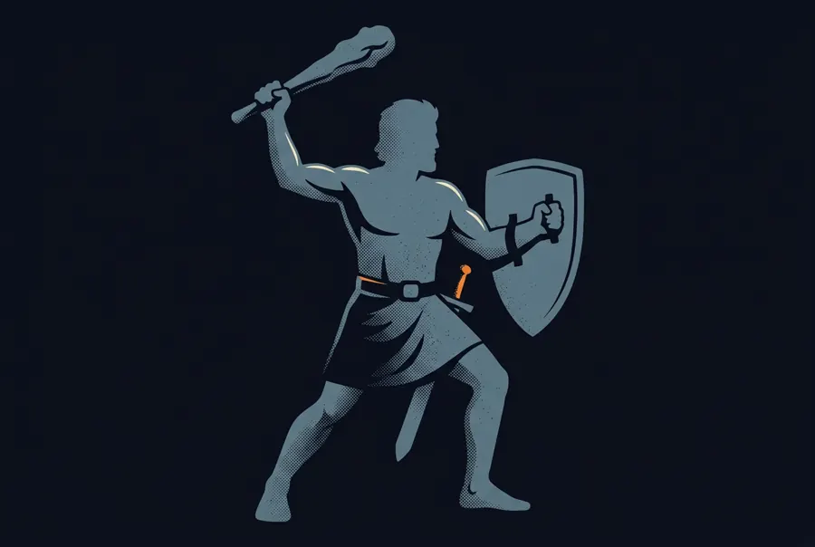
Back in the evening sky
Orion is back
Low in the east, rising. 3 of 23 stars found. Show me ›
✕
ORION · RISING
TONIGHTEXPLORECOLLECTION
The figure art fades in over the real stars on that first evening only, like an old star atlas. After that it’s the usual constellation lines.
Lock screen · shower count-in
Sunday, December 6
6:10
In 7 days: the Geminidsnow
Up to 150 an hour, the best shower of the year. Peak night is next Sunday. Catch any card that night for its badge.
Until 9:40 PM: best viewingFri
It’s dark and clear. See what’s in your sky.
Swipe up to open
One count-in a week out, then the usual meteor-shower notice on the night. Only for the big ones (Quadrantids, Perseids, Geminids).
Tonight page · coming up this season
TONIGHTPETERBOROUGH · 6:10 PM
Meteor shower · in 7 days
Geminids
Up to 150 an hour, the best of the year. Peak night: Sunday, December 13.
MONTUEWEDTHUFRISATSUN
Catch any card that night to earn the Geminids 2026 badge. Remind me ›
Back this season
Orion · from 9:30 PM
3 of 23 stars found
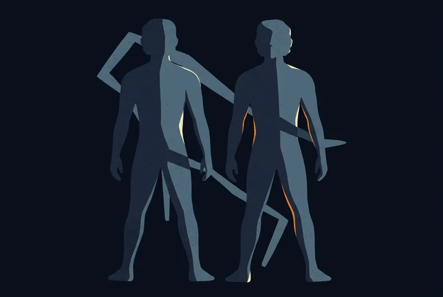
Gemini · from 10 PM
Where the Geminids come from
TONIGHTEXPLORECOLLECTION
Facts used: Geminids from js/events.js (peak Dec 14, “up to 150 an hour, the best of the year”); peak night 13→14 Dec 2026 is Sunday night. Orion has 23 collectable stars in data/constellations.json. Approximate: “clear of the trees by 9:30 PM around Nov 19” is my estimate for ~44° N; the real date and time would be computed from the star positions for your place.
03Themed weeks
A small goal that runs Monday to Sunday, the same for everyone, with its own week badge. It gives a quiet week a shape and sends you after things you’d normally skip. This one: “Rocket stage week: catch three from different countries.” Others in the rotation: Old-timers week (launched before 1970), Station week (ISS and Tiangong), Fleet week (stamp three launches), Planet week. The week only picks themes your sky can actually deliver.
MediumNotice · Tonight card · patch
Monday · the week starts
SPACE COLLECTORCOLLECT THE NIGHT SKY
This week
Rocket stage week
Catch three stages from three different countries by Sunday. See the week ›
✕
TONIGHTEXPLORECOLLECTION
One notice on the first open of the week. No push notification for it: it’s a reason to look, not a reason to be pinged.
Tonight page · the week card, 1 of 3
TONIGHTPETERBOROUGH · 7:05 PM
This week · 4 days left
Rocket stage week
Catch three rocket stages from different countries.
1 of 3+150 XP · week badge
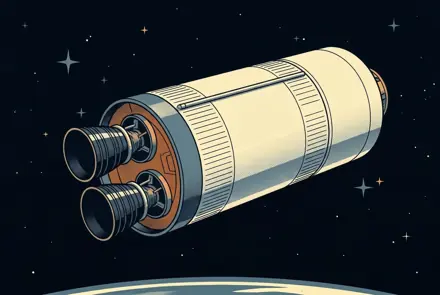
China✓ CZ-3 stage
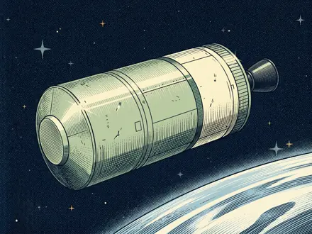
Soviet / Russia8:12 PM tonight
USA9:40 PM tonight
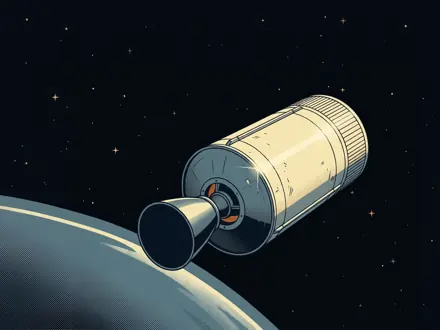
EuropeThu
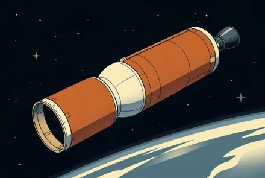
Japannot this week
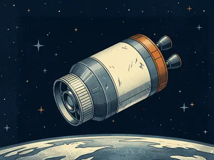
IndiaSat
Two more countries pass tonight. Show me ›
TONIGHTEXPLORECOLLECTION
Countries, not flags: the names read in red night mode and don’t need emoji. Each tile says when one passes, so the card is also a plan.
Earned · the week badge
SPACE COLLECTORCOLLECT THE NIGHT SKY
WEEK BADGE EARNED
Rocket stage week
China, Soviet Union and the USA. Three countries, one week.
TONIGHTEXPLORECOLLECTION
Week badges are patches in their own group on the wall, a row that fills up week by week. Miss one and it comes back in the rotation later.
Facts used: the catalogue has rocket stages from the Soviet Union/Russia (625), USA (429), China (247), France/Europe (154), India (40) and Japan (38) by owner, so three countries in a week is doable from most of the northern hemisphere. Stage art is the real small art (long-march-3, sl-8, thor-upper, ariane-early, h2a, pslv). Patches are drawn by the real js/patches.js.
Surprise and delight · real events in the sky, one-night secrets, something that’s only yours
04Starlink trains
For a few days after a launch, a new batch of Starlinks flies in a line, one after another, low and bright before they spread out. It’s the one thing people see and ask “what was that?”. The app already treats Starlinks under 60 days old as bright. When a fresh launch passes in a train on a clear evening, it becomes an event: a notification, a special look in the circle, and a stamp on the Starlink card that says you caught it as a train.
MediumNotification · sky · stamp
Lock screen · 10 min before
Thursday, October 15
8:04
8:14 PM: a Starlink trainnow
27 satellites in a line, launched 2 days ago. Look west: it climbs high, then fades in the east.
Swipe up to open
Its own switch (Starlink trains), on by default. Only in the first days after a launch, when they’re still bunched up and bright.
In the sky · the train in the circle
SPACE COLLECTORCOLLECT THE NIGHT SKY
27 IN A LINE
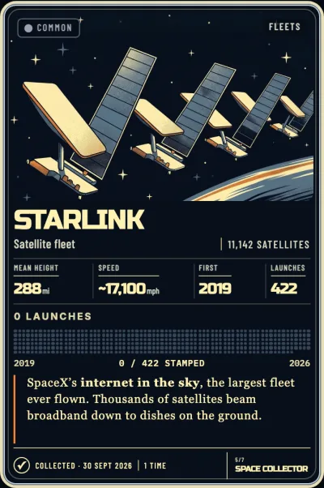
Starlink train~550 km
Starlink · 27 satellites
Launched 2 days ago · new stamp
Collect
TONIGHTEXPLORECOLLECTION
The dots move along the line in the real app (each is its own satellite). Lining up any one of them catches the train: one tap, one stamp.
The stamp · caught as a train
NEW STAMP · CAUGHT AS A TRAIN
TRAIN13 OCT 2026
VIEW IN COLLECTION ›
On the card, the launch’s dot gets a tiny train mark, so a fleet card shows which launches you saw as trains. A patch, Choo choo, after five.
Facts used: the latest Starlink launch in today’s catalogue is 13 Oct 2026 (2026-232), 27 satellites; the mock dates it 15 Oct to say “2 days ago”. Trains are brightest in the first few days and spread out over a week or two as they raise their orbits (the app already gives Starlinks under 60 days stdMag 5.0). Approximate: “~550 km” is a typical early parking height; the real ticket shows the live range.
05Halloween: the ghost satellite
One night a year, October 31, a long-dead satellite haunts the sky. It’s really up there and really silent: lining it up gives it a ghostly green shimmer and a BOO, and catching it earns a secret patch. It ties into the existing Dead Satellites Society set. A week before, the Tonight page teases it without saying what it is. Two candidates, both true:
SmallTeaser · sky · secret patchHalloween is in 6 days
The week before · teaser on Tonight
TONIGHTPETERBOROUGH · 7:30 PM
?
Saturday, Oct 31 · one night only
Something’s haunting the sky
A satellite that died long ago will be out after dark. Find it before midnight.
7:52PM · SW
◆ RareInternational Space StationHigh in the southwest
TONIGHTEXPLORECOLLECTION
Shown from the 24th. On the night itself the box says where it is and when, like a headliner, plus one notification at dusk: “Tonight: something’s haunting the sky”.
In the sky · A: Envisat
SPACE COLLECTORCOLLECT THE NIGHT SKY
BOO
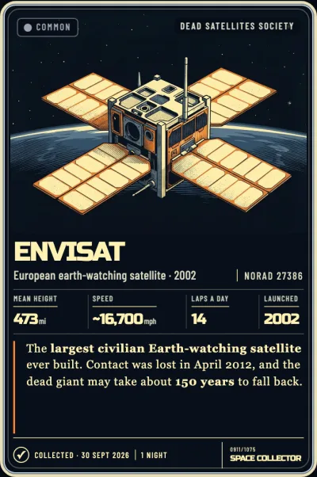
BOO · Ghost satellite773 km
Envisat
Silent since 2012 · still up there
Collect
TONIGHTEXPLORECOLLECTION
A: Envisat. Europe’s 8-tonne Earth-watcher, lost contact April 2012. Bright (about magnitude 2), so most people can actually catch it on the night. My pick.
In the sky · B: Vanguard 1
SPACE COLLECTORCOLLECT THE NIGHT SKY
BOO
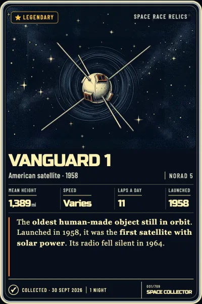
BOO · Ghost satellite3,850 km
Vanguard 1
Silent since 1964 · the oldest thing in orbit
Hold to find
TONIGHTEXPLORECOLLECTION
B: Vanguard 1. The better story, but it’s binoculars-only (about magnitude 7.5), so it would have to work like Voyager: invisible until it’s in the circle, hold 4 s to find it.
The secret patch
SPACE COLLECTORCOLLECT THE NIGHT SKY
SECRET PATCH
Ghost Satellite
You found Envisat on Halloween. Silent since 2012, still going round every 100 minutes.
TONIGHTEXPLORECOLLECTION
A patch with the year on it, so each Halloween is its own (and it can be a different ghost each year: Envisat, then TIROS 1, then Vanguard…).
Facts checked against the catalogue and cards: Envisat is NORAD 27386, launched 2002, stdMag 2.0, Common, in the Dead Satellites Society set; its card fact says contact was lost in April 2012. Vanguard 1 is NORAD 5, launched 17 March 1958, stdMag 7.5 (binoculars), Legendary; its card says its radio fell silent in 1964. Oct 31 2026 is a Saturday. Approximate: the km in the tickets are typical heights (Envisat ~770 km; Vanguard’s orbit runs ~650 to ~3,800 km), not live ranges. “Every 100 minutes” for Envisat: ~14.4 laps a day, so about 100 min. Keep it true: the green shimmer is our effect, not something you’d see.
06Your birthday satellite
Settings asks for your birthday (stored only on this phone, never sent anywhere) and finds something that went up the day you were born and is still up there. When it passes on a clear night, you hear about it. It’s a card that belongs to you in a way no other card does, and a great thing to show a friend.
MediumSettings · reveal · notification
Settings · your birthday
SETTINGSMAKE IT YOURS
01 · COLLECTION
Card backMission Control
›
Your birthdayOnly on this phone
Add ›
Your birthday
We’ll look for something launched that day that’s still up there. It stays on this phone.
MayJuneJuly
222324
198019811982
Find my satellite
One row in Collection. The year matters: without it we can only do “launched on your birthday” (see below).
The reveal · born the same day
BORN THE SAME DAY
NOAA 7 went up the day you were born.
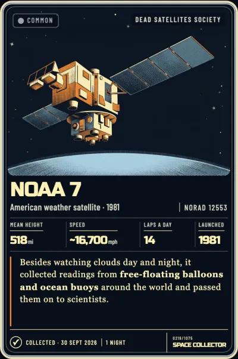
○ Not yet collected
23 June 1981. It still goes round 14 times a day. It passes Thursday at 9:12 PM.
Remind meShow me
23 JUNE 1981
The card arrives face up but un-collected (picture shown, “Not yet collected” in the footer) until you catch it. Its first catch says “BIRTHDAY TWIN” in the reveal.
Lock screen · on the pass
Thursday, October 29
9:02
9:12 PM: your birthday satellitenow
NOAA 7 launched the day you were born. Look north: it climbs halfway up.
Swipe up to open
A free reminder, like the ISS: never needs Plus. Sent for the first good pass, then on your birthday each year if it passes that night.
No exact match · most people
SETTINGSMAKE IT YOURS
Born 9 May 1984
Kosmos 1550
Launched two days after you. Nothing from your exact day is still up and bright enough to see.
Also yours
MACSAT 1 and 2
Launched on your birthday, 9 May 1990. Binoculars help.
We always say which it is: your day, a few days off, or your birthday in another year.
The honest fallback, in order: the same day → the nearest launch within about two weeks → the same date in another year.
Facts checked: NOAA 7 is NORAD 12553, launched 23 June 1981, Common, stdMag 4.05 (a dark-sky catch from a city it may be hard). Kosmos 1550 launched 11 May 1984; MACSAT 1 and 2 launched 9 May 1990 (stdMag ~6, binoculars). The brief’s example, Kosmos 1408, isn’t usable: Russia destroyed it in its November 2021 anti-satellite test, so it isn’t in the catalogue. Important: in today’s catalogue only about 7% of days from 1960–2010 have a launch with something still up and bright enough (that isn’t debris), so an exact match is the lucky case; same month-and-day in some year covers 363 of 366 dates. The pass day and time (“Thursday at 9:12 PM”, “north, halfway up”) are examples.
My order
If I could build three first:
05 · Halloween: the ghost satelliteSmall, and it’s six days away. Envisat makes it catchable for almost everyone, and it’s a natural first post for the App Store and socials.
01 · Almost thereThe cheapest reason to come back: it uses levels you already have and a pass we already know about. It fits in the existing Catch of the day slot.
04 · Starlink trainsIt answers the question people actually ask about the sky. Fresh launches every week mean it happens often.
Notes: every notification here obeys the existing rules (at most two a day, only when the forecast is clear, never 11 PM to 7 AM). Seasonal returns and the birthday satellite are free; nothing here needs Plus. Mock-ups use real card renders captured from review.html into design/come-back/, the real small art and constellation figures, and real patches drawn by js/patches.js.